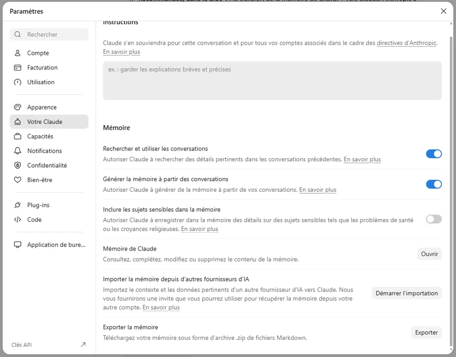
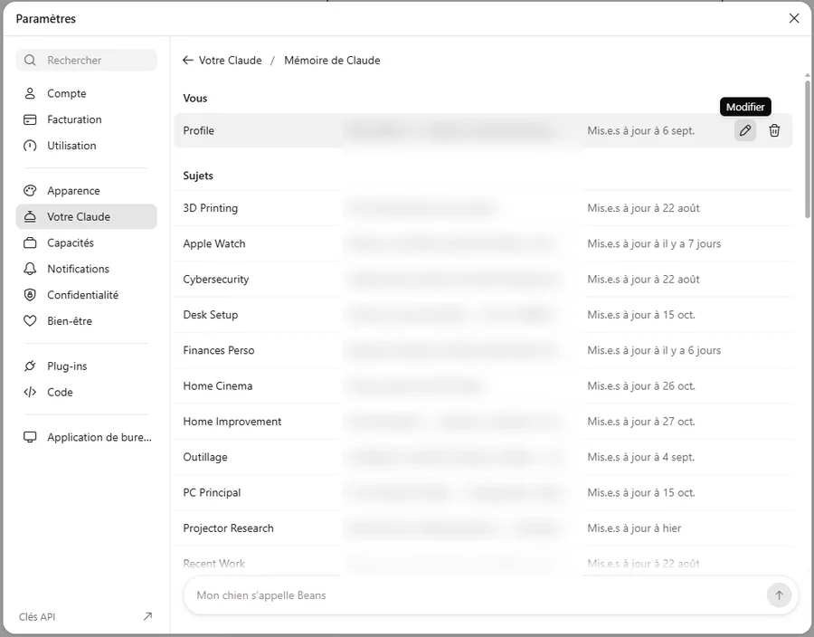
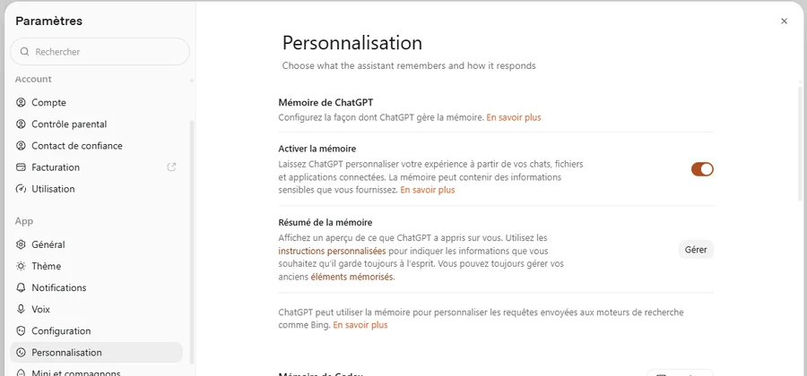
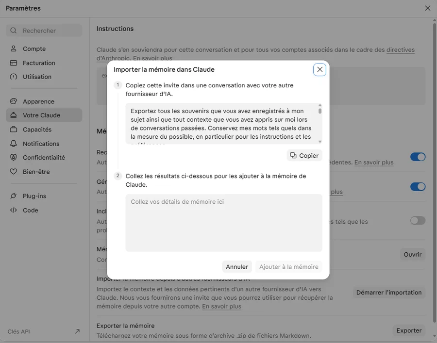

Claude et ChatGPT retiennent qui tu es, sur quoi tu travailles et comment tu aimes tes réponses. Et c'est toi qui décides : tu vois tout, tu corriges, tu effaces.
Claude · ChatGPTInclus, même en gratuit5 captures annotées
1
C'est quoi ?
La mémoire permet à ton IA de retenir, d'une conversation à l'autre, ce qui compte pour toi : ton métier, tes projets, tes préférences de réponse. Plus besoin de te présenter à chaque fois. Claude et ChatGPT l'ont tous les deux, et dans les deux cas tu peux tout voir, corriger et effacer.
Elle se remplit toute seule
L'IA garde ce qui lui semble utile pendant que tu discutes. Tu peux aussi lui dire « retiens que… » pour enregistrer quelque chose tout de suite.
Automatique
Tu la corriges
Sur Claude, chaque sujet se modifie au crayon ou se supprime. Sur ChatGPT, tu corriges le Résumé de la mémoire en écrivant une phrase dans le champ du bas.
Modifiable
Une mémoire par projet
Sur Claude, chaque projet a sa propre mémoire : ton travail et ta vie perso ne se mélangent pas.
Séparée par projet
Tu changes d'IA sans repartir de zéro
Claude fournit une invite à coller dans ChatGPT (ou Gemini) : tu recopies la réponse dans Claude, et ta mémoire est importée. Tu peux aussi exporter la mémoire de Claude en .zip.
Import / export
Ce qu'il faut savoir (lu pour toi dans la doc)
€Inclus dans les offres gratuites. Sur Claude, la mémoire est activée par défaut en Free, Pro et Max (web, appli de bureau, mobile) ; en Team et Enterprise, c'est l'administrateur qui décide. Sur ChatGPT, les réglages disponibles varient selon l'offre, le pays et l'appareil : vérifie dans tes Paramètres.
!Le résumé de ChatGPT n'est pas complet. OpenAI le précise : le Résumé de la mémoire donne une vue d'ensemble, il ne contient pas tout ce que ChatGPT a retenu. Pour vraiment effacer une info, il faut aussi supprimer les conversations, fichiers ou applis connectées qui la contiennent.
⌂Les sujets sensibles. Sur Claude, les sujets sensibles (santé, religion…) ne sont pas mémorisés par défaut : un réglage permet de les inclure. Certaines infos ne sont jamais enregistrées (numéros d'identité, de compte bancaire…).
↔Une conversation sans mémoire. Claude : conversation incognito (icône fantôme) ou « + › Mémoire » désactivé pour une seule conversation. ChatGPT : chat temporaire, qui ne crée ni ne modifie de souvenirs.
⚠Relis ce qu'elle retient. La mémoire peut garder une info périmée (ancien poste, projet terminé). Jette un œil de temps en temps et corrige : une ligne suffit.
2
Où le trouver, pas à pas
Dans les Paramètres de Claude et de ChatGPT, sur le web ou dans l'appli de bureau. Captures prises le 23/11/2026, informations personnelles floutées.
1
Claude : ouvrir la mémoire
Paramètres › Votre Claude › Mémoire de Claude › Ouvrir
Dans Votre Claude, la section Mémoire regroupe les interrupteurs (générer la mémoire, rechercher dans les conversations, sujets sensibles), l'import et l'export. Mémoire de Claude › Ouvrir montre ce qu'il a retenu.

Paramètres › Votre Claude › Mémoire.
2
Claude : modifier ou supprimer un sujet
Mémoire de Claude › Sujet › ✎ Modifier / 🗑
La mémoire est rangée en sujets. Sur chaque ligne : le crayon pour modifier, la corbeille pour supprimer. Le champ du bas sert à lui dire quoi retenir.

La liste des sujets (descriptions floutées).
3
ChatGPT : ouvrir le résumé
Paramètres › Personnalisation › Résumé de la mémoire › Gérer
Dans Personnalisation, Activer la mémoire allume ou coupe la fonction ; Résumé de la mémoire › Gérer affiche ce que ChatGPT a appris sur toi.

Paramètres › Personnalisation.
4
ChatGPT : corriger en une phrase
Résumé de la mémoire › Poser une question ou mettre à jour
Écris ta correction dans le champ du bas (« J'ai changé de poste : je suis maintenant… »). Le menu ••• permet aussi de tout supprimer et de désactiver la mémoire.
Le Résumé de la mémoire (texte flouté).
5
Passer ta mémoire de ChatGPT à Claude
Votre Claude › Importer la mémoire › Démarrer l'importation
Claude te donne une invite : Copier, colle-la dans ChatGPT, puis recopie sa réponse dans Claude et Ajouter à la mémoire.

La fenêtre « Importer la mémoire dans Claude ».
3
5 usages concrets
01
Ne plus te présenter
Ton métier, ton secteur, ton niveau : l'IA adapte ses réponses sans que tu les répètes.
Tu te présentes une fois→Mémoire→Réponses adaptées
02
Garder ton style
« Réponses courtes, en tutoiement, sans jargon » : retenu pour les prochaines conversations.
TonLongueurFormat
03
Reprendre un projet
Tu reviens trois jours plus tard : l'IA sait déjà où en est ton projet.
Projet→Pause→Reprise directe
04
Mettre à jour une info
Nouveau poste, déménagement, projet terminé : une phrase et la mémoire est à jour.
Ancienne info→Une ligne→À jour
05
Changer d'IA
Importe dans Claude ce que ChatGPT ou Gemini avait appris sur toi, en un copier-coller.
ChatGPT→Invite→Claude
4
Et ailleurs ?
Les trois grandes IA ont désormais une mémoire que tu peux consulter et corriger.
Claude
Mémoire de ClaudeGratuit, Pro, Max (Team / Enterprise : selon l'admin)
OuiWeb, bureau, mobile
Bon pour : une mémoire rangée en sujets, modifiable ligne par ligne, séparée par projet, avec import et export.
ChatGPT
Mémoire (Résumé de la mémoire)Selon l'offre et le pays
OuiWeb, bureau, mobile
Bon pour : une mémoire qui se met à jour seule, que tu corriges en une phrase.
Gemini
Mémoire (Personal Intelligence)Compte Google, 18 ans et plus
OuiWeb, mobile
Bon pour : retrouver tes anciennes conversations, avec un résumé de mémoire et l'import depuis une autre IA.
Notre verdict
CLAUDEsi tu veux voir et retoucher ta mémoire sujet par sujet.
CHATGPTsi tu préfères qu'elle se tienne à jour toute seule.
Rejoins les Repo-Potes
Chaque vidéo RepoPop Décode t'explique une fonction de ton IA en moins d'une minute, avec son kit comme celui-ci.